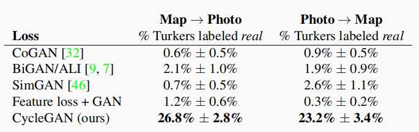

Experiment必备
这个方法比较主观，早期的图像翻译模型（如\(CycleGAN~StarGAN\)）较多采用这种评估方法。有两种套路，都是挂在网上，让不同的人根据一些提出的指标选择图片，最后结果都会呈现出一个百分比：

\(StarGAN~v1\)论文中，在\(RaFD\)数据集上训练了一个识别各种表情的分类器。在评估时，用这个分类器在不同模型迁移结果上的分类误差来衡量质量，也算是比较合理。
如果是从语义分割图到真实图片的图像翻译模型，例如\(CycleGAN\)中的\(Cityspace\)数据集，自然可以反过来使用语义分割的准确度验证。
\(FID\)距离是2018年提出的一个比较重要的指标，许多新模型都采用它来评判，例如\(StyleGAN\)等。计算\(FID\)距离需要使用一个预训练的\(Inception~v3\)模型，输入一张图片，得到最后一个池化层的激活向量（2048维）作为结果。在生成图片与真实图片上分别计算，各得到\(n\)个激活向量，再计算这2族生成向量的均值与协方差矩阵，代入公式就可以得到\(FID\)距离了：
包括\(LPIPS\)，这在\(StarGAN~v2\)论文中被用来评估质量；\(Inception~Score\)，许多论文也在用，但不如\(FID\)科学，可能以后会被废弃；\(Multi~Scale~Statistical~Similarity\)是\(PGGAN\)论文中提到的一种评估方法，使用到了拉普拉斯金字塔，期望在多尺度计算\(Wasserstein\)距离，但目前没有看到别的论文在引用它。